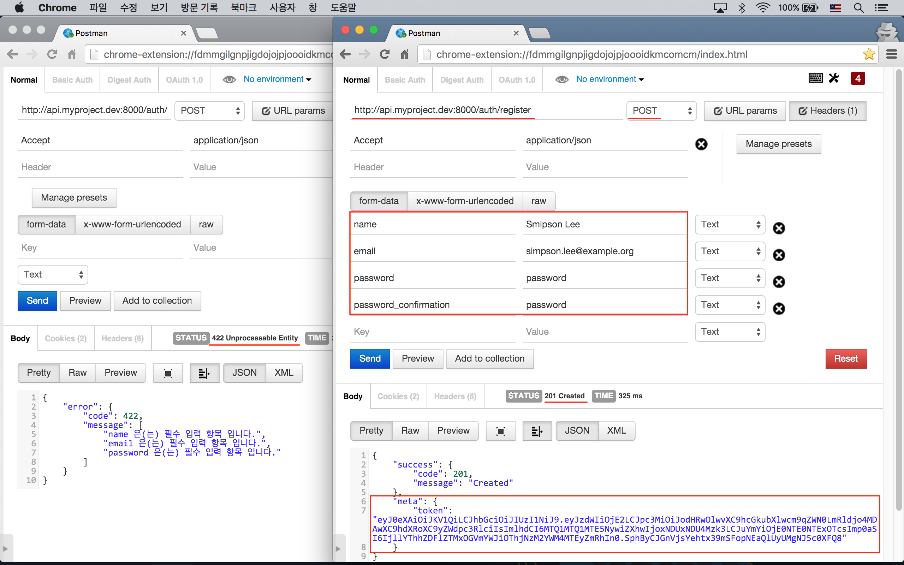
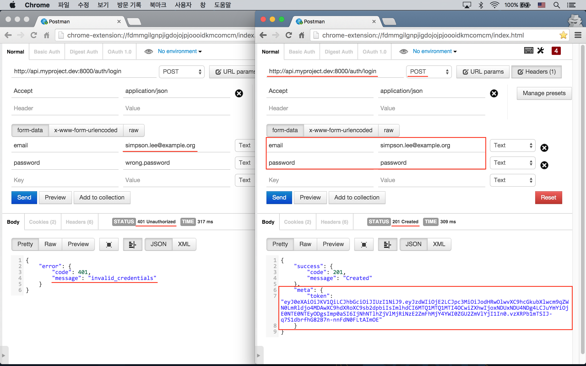
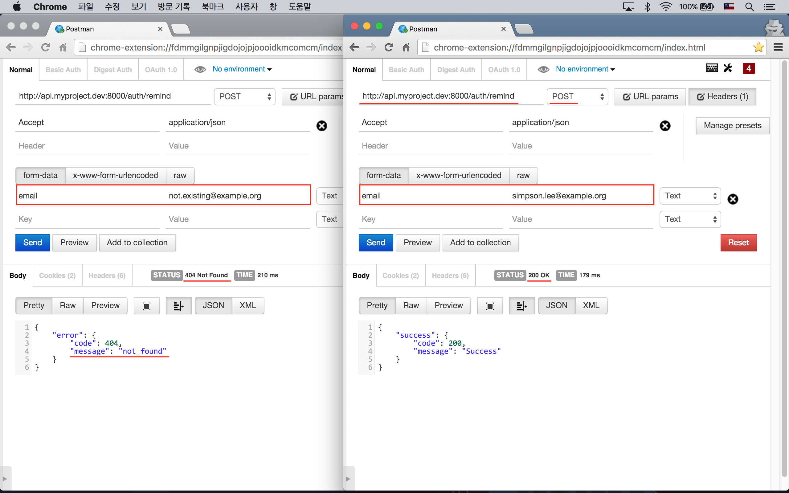
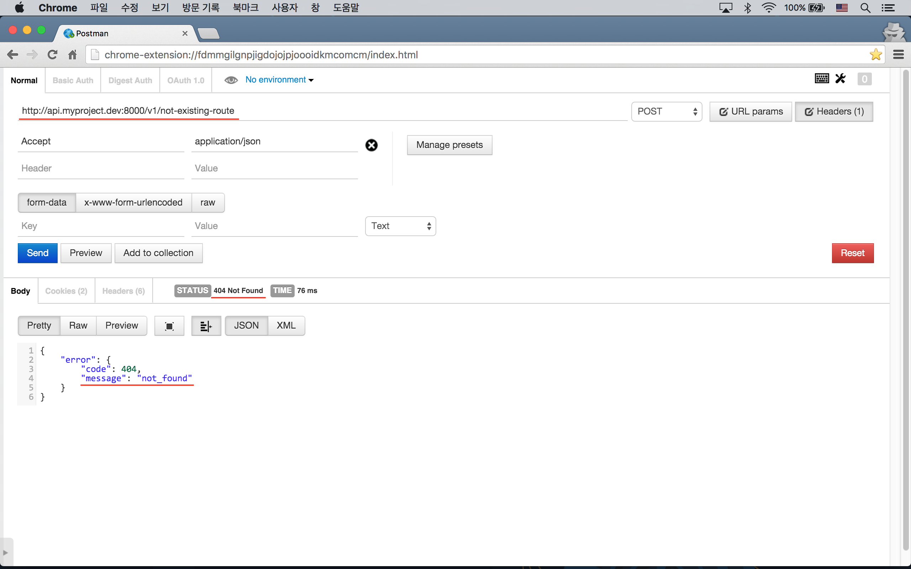

실전 프로젝트 3 - RESTful API
47강 - 중복 제거 리팩토링
앞 강에서 기존 컨트롤러의 HTTP 응답 메소드 부분을 API 관련 컨트롤러에서 오버라이드하는 과정에서, 상당히 많은 중복을 보았을 것이다. 이 중복을 제거하는 작업을 이번 강좌에서 해 볼 것이다.
API Response 패키지
API Response 에서 중복을 피하고 Response Payload 를 좀 더 편리하게 만들 수 있는, 이 실전 프로젝트 규모에 적절한 패키지를 찾아 봤지만.. 못 찾았다. App\Http\Controllers\Controller 나 별도 Trait 로 API Response 를 위한 공용 메소드를 정의하는 방법이 있기도 하지만, 필자가 Packagist 에 올려 놓은 appkr/api 패키지를 이용하도록 하자.
참고 Laravel/Lumen 월드에서 API 관련 패키지 중에서는 dingo/api 가 갑 (甲) 인데, 라라벨의 네이티브 클래스들을 꽤 많이 오버라이드하고 있어서 사용법을 다시 익혀야 하는 단점이 있다. 45강 - 기본 구조 잡기 서두에서 같이 고민했던 "단일 서버 vs. 복수 서버" 섹션을 기억할 것이다. dingo/api 는 API 전용 독립 서버, 즉 복수 서버 구조에 더 적합하다고 생각된다. 거의 라라벨 프레임웍 수준의 큰 프로젝트로 API 관련 a-Z 를 모두 담고 있고, 베스트 프랙티스를 실천하고 있으므로 꼭 한번 설치해서 사용해 보기 바란다.
설치
$ composer require "appkr/api:0.1.*"ServiceProvider 를 설정하고 config 파일을 우리 프로젝트 안으로 끌고 오자.
// config/app.php
'providers' => [
// ...
Appkr\Api\ApiServiceProvider::class,
],$ php artisan vendor:publish --provider="Appkr\Api\ApiServiceProvider"설정
설정 파일을 확인해 보자.
// config/fractal.php
return [
'pattern' => 'v1/*',
'domain' => 'api.myproject.dev',
// ...
'successFormat' => [
'success' => [
'code' => ':code',
'message' => ':message',
]
],
'errorFormat' => [
'error' => [
'code' => ':code',
'message' => ':message',
]
],
];pattern, domain
: 이 패키지에서도 is_api_request() 란 Helper 를 포함하고 있는데, 이 Helper 에서 사용하는 설정 값들이다. 주의할 점은 이 패키지가 먼저 로드되고 난후, 우리가 정의한 Helper 가 로드되는데, 이 때 function_exists() 에 걸려서 우리 Helper 가 로드되지 않고,이 패키지의 is_api_request() 가 동작하게 된다는 점이다. PHP 네임스페이스가 필요한 이유를 방금 봤다.
successFormat
: 200 번 대의 성공 응답을 할 때, 이 포맷이 사용된다. :code, :message 는 Appkr\Api\Response 클래스의 HTTP 응답 메소드에서 HTTP Status Code 와 메소드에 넘긴 메시지로 치환된다.
errorFormat
: 400 번 이상의 에러 응답을 할 때, 이 포맷이 사용된다.
리팩토링
방금 끌어온 appkr/api 패키지에서는 json(array $payload) Helper 를 제공한다. 또, json() Helper 는 인자 없이 호출할 때는 Appkr\Api\Response 인스턴스를 리턴하기 때문에, 해당 클래스에 정의된
success(string $message)error(string|array|\Exception $message)respond***(string $message)setStatusCode(int $statusCode)setMeta(array $meta)...
등 다양한 메소드를 json()->success() 처럼 체인해서 사용할 수 있다. set*() 메소드는 다른 응답 메소드보다 먼저 체인되어야 한다는 점을 주의하자.
컨트롤러
하나씩 적용해 보자. json(array $payload) Helper 는 response()->json(array $payload) 와 같은 역할을 한다.
// app/Http/Controllers/Api/WelcomeController.php
class WelcomeController extends Controller
{
/**
* Get the index page
*
* @return \Illuminate\Http\JsonResponse
*/
public function index()
{
return json([
'name' => 'myProject Api',
'message' => 'Welcome to myProject Api. This is a base endpoint.',
'version' => 'n/a',
'links' => [/* ... */],
]);
}
}unprocessableError(mixed $message) 메소드는 HTTP 응답 코드를 422 로 설정하고, 인자로 넘겨 받은 $message 를, config('fractal.errorFormat') 으로 정의한 형태로 치환해서 HTTP 응답을 내 보내는 역할을 한다.
setMeta(array $meta) 는 HTTP 응답을 위한 Payload 에 ['meta' => $meta] 를 추가해 준다.
created(string|array|Illuminate\Database\Eloquent\Model $primitive) 는 HTTP 응답 코드를 201 로 설정하고, 인자로 넘겨 받은 $primitive 의 형태에 따라 적절하게 포맷팅하여 HTTP 응답을 내보내는 일을 한다.
// app/Http/Controllers/Api/UsersController.php
class UsersController extends ParentController
{
// ...
protected function respondValidationError(Validator $validator)
{
return json()->unprocessableError($validator->errors()->all());
}
protected function respondCreated(User $user)
{
return json()->setMeta(['token' => \JWTAuth::fromUser($user)])->created();
}
}
SessionsController 에서 위와 중복된 메소드는 설명을 생략했다.
unauthorizedError(mixed $message) 는 HTTP 응답 코드를 401로 설정하고, 넘겨 받은 $message 를 포맷팅해서 HTTP 응답을 반환한다.
// app/Http/Controllers/Api/SessionsController.php
class SessionsController extends ParentController
{
// ...
protected function respondLoginFailed()
{
return json()->unauthorizedError('invalid_credentials');
}
}
PasswordsController::respondError() 는 어떤 에러가 넘어올 지 모르기 때문에, notFoundError(mixed $message) 를 쓰지 않고, 좀 더 일반적인 error() 메소드를 사용하였다.
setStatusCode(int $statusCode) 는 HTTP 응답 코드를 셋팅하는 역할을 한다. error() 메소드에는 'not_found' 란 스트링을 인자로 넘겨 주었다.
// app/Http/Controllers/Api/PasswordsController.php
class PasswordsController extends ParentController
{
// ...
protected function respondError($message, $statusCode = 400)
{
return json()->setStatusCode($statusCode)->error('not_found');
}
}
App\Http\Controllers\Api\V1\ArticlesController 는 좀 더 다른 형태의 메소드를 사용해야 하기에, 다음 강좌에서 살펴 보기로 하자.
Handler
이번에는 라라벨의 글로벌 Exception Handling 을 하는 'App\Exceptions\Handler' 클래스에 끌어온 Response 의 메소드들을 적용하자.
class Handler extends ExceptionHandler
{
public function render($request, Exception $e)
{
// ...
if (is_api_request()) {
// ...
return json()->setStatusCode($code ?: 400)->error($message);
}
}
}